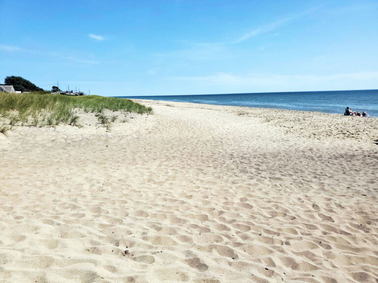

IP address: 10.0.0.65
Location Where I Grew Up: Mt. Kisco, New York
Natucket Beach is my favorite place because it is so calm and peaceful over there, and the water is never too cold. I also love the sights and sounds of other beachgoers enjoying their day in such a pretty atmosphere.
My favorite restaurant: AquaPazza
Something No One Would Expect From Me: I love to write poetry